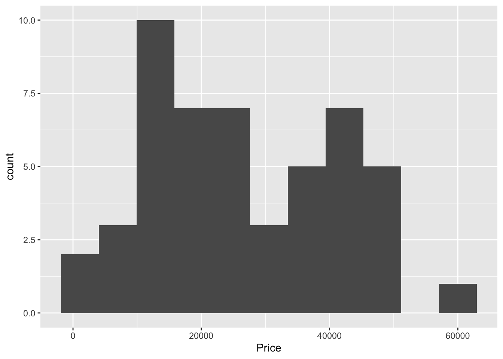
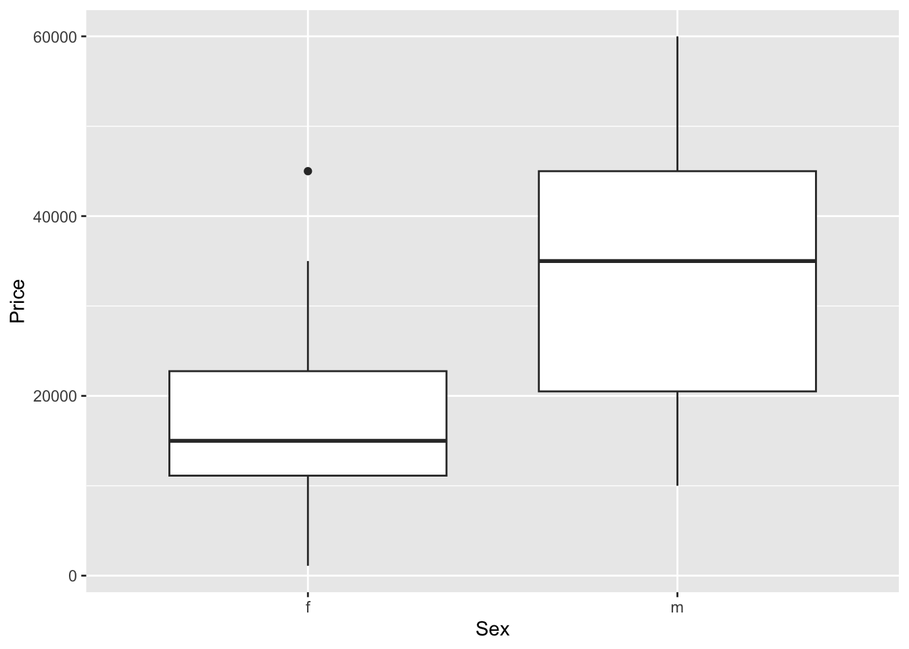

horse <- read.csv("https://raw.githubusercontent.com/roualdes/data/refs/heads/master/horse_prices.csv")Exam 01 Practice, solutions
observational study, because horse prices were likely not assigned by the researcher
suppressMessages(library(dplyr))
library(ggplot2)quantitative/numeric: Price, Age, Height qualitative/categorical/factor: Sex
explanatory: Age or Height response: Price
ggplot(horse, aes(Price)) + geom_histogram(bins=11)
mean(horse$Price, na.rm = TRUE)[1] 26840median(horse$Price, na.rm = TRUE)[1] 25000The histogram looks more or less symmetric, but because of the one potential outlier near $60,000, the mean is larger than the median.
ggplot(horse, aes(Sex, Price)) + geom_boxplot()
The median horse price for male horses is higher than the female median price. There is one potential outlier for the female horse prices. The mean does not show up on box plots.
horse %>%
group_by(Sex) %>%
summarize(m = mean(Price),
s = sd(Price),
n())# A tibble: 2 × 4
Sex m s `n()`
<chr> <dbl> <dbl> <int>
1 f 16505 11043. 20
2 m 33730 13285. 30The variability in horse prices is greater for male horses, than it is for female horses, as is seen by the larger standard deviation of male horse prices. In this dataset, there were 20 female horses and 30 male horses.
- The mean and standard deviation for dataset 2. is larger, because of the relatively large value 20 pulling up the mean and the standard deviation.
x <- c(3,5,5,5,8,11,11,11,13)
y <- c(3,5,5,5,8,11,11,11,20)
mean(x)[1] 8sd(x)[1] 3.605551mean(y)[1] 8.777778sd(y)[1] 5.214829- The mean is smaller for dataset 2., because of the relatively extreme negative value -40. However, the standard deviation is larger for 2., because the -40 is further from the mean in this dataset.
x <- c(-20,0,0,0,15,25,30,30)
y <- c(-40,0,0,0,15,25,30,30)
mean(x)[1] 10sd(x)[1] 17.92843mean(y)[1] 7.5sd(y)[1] 23.29929